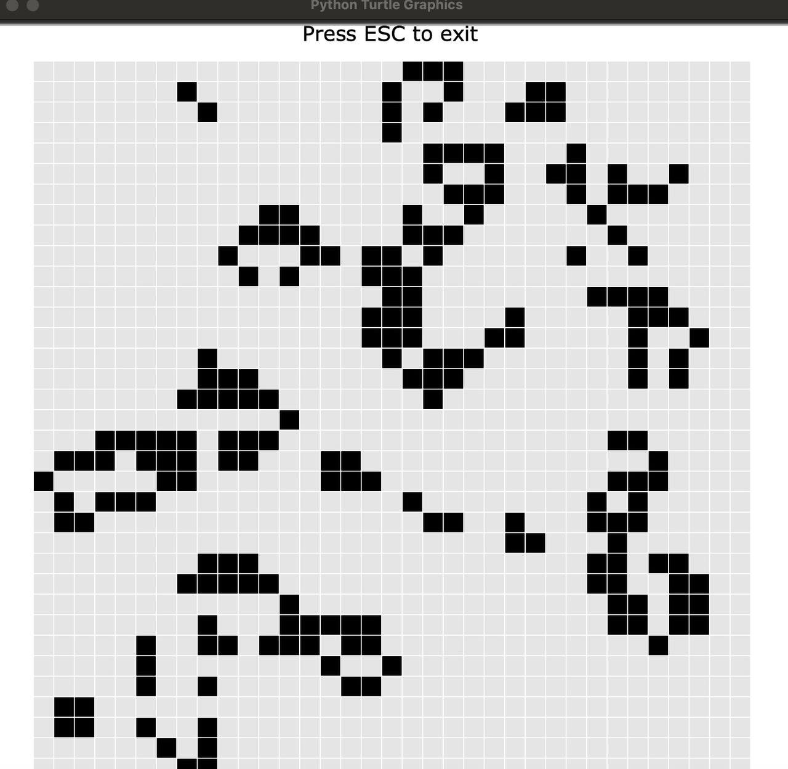
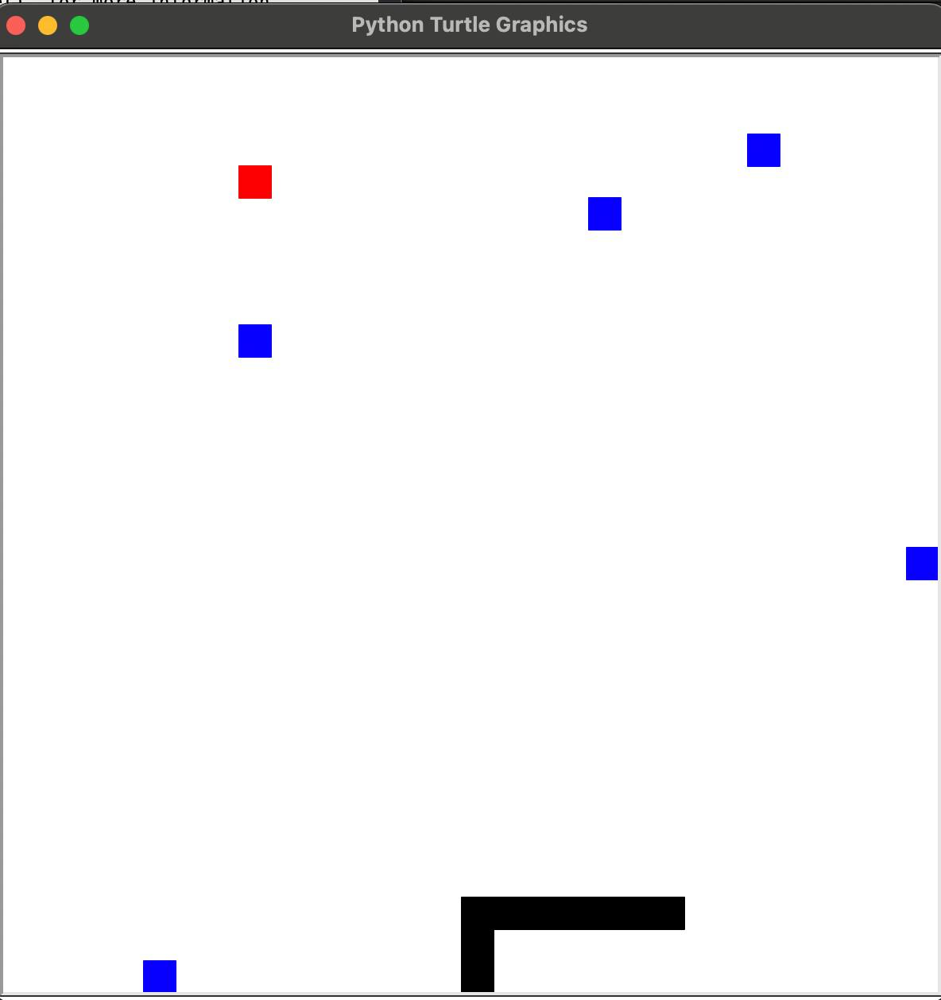
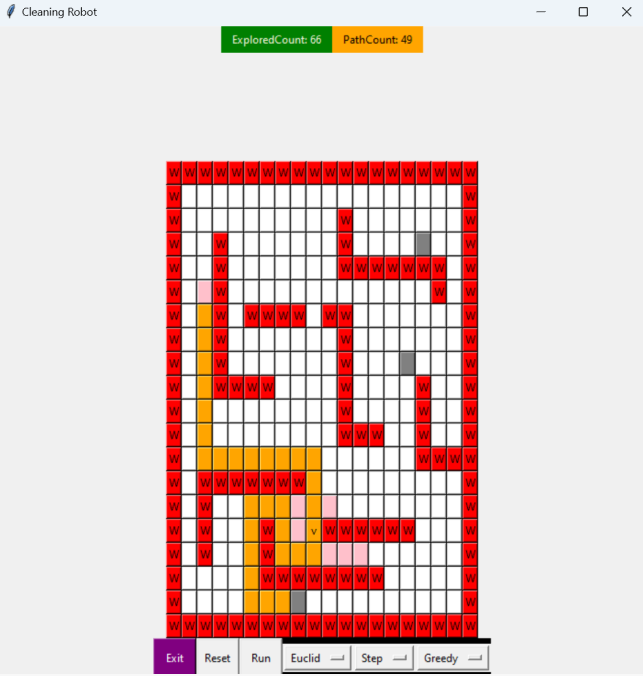

Title: Conway's Game of Life Description: This project is a visual simulation of Conway's Game of Life, the famous cellular automaton created by mathematician John Conway. The game is played according to simple rules: A cell survives, dies, or is born depending on the number of neighbors. The system evolves automatically with each new generation. The visual result demonstrates emergent complexity: highly dynamic structures can emerge, stabilize or disappear from simple patterns. What I learned: Working with two-dimensional arrays and modeling loops Implementing Conway rules in Python Managing screen updates with Turtle graphics to improve performance Technology Stack: Python, Turtle
GitHub Repo: Conway's Game of Life
Title: Classic Snake game - with turtle graphics Description: This is a simple version of the classic Snake game, created in Python using the Turtle module. The snake is controlled using the keyboard and moves around the grid, aiming to “eat” the red square (food) while avoiding the blue blocks (obstacles) and the edges of the screen.
What I learned: Real-time input processing in Python Collision detection Rendering game objects using turtle Managing game state (reset, win/loss conditions). Technology Stack: Python, Turtle
GitHub Repo: Snake game>
Title: Smart Vacuum Cleaner Description: This project models a smart robot vacuum cleaner navigating a 2D environment filled with walls and dirt using AI search algorithms. The robot can use BFS, DFS, UCS, Greedy, or A* to decide how to reach dirty rooms and clean them efficiently. Key features: Full-featured graphical interface with manual control Support for multiple search strategies Customization of cost/heuristics (Manhattan, Euclid, left/upward bias) Color visualization of explored states and final paths Modular codebase utilizing an agent/environment architecture. What I learned: Designing and visualizing the behavior of AI agents in two-dimensional environments Implementing and comparing multiple search strategies (BFS, A*, Greedy) Creating intelligent cost functions and heuristics Developing a GUI using tkinter in Python Technology Stack: Python, tkinter, object-oriented programming, AI search algorithms
GitHub Repo: Smart Vacuum Cleaner >
I’m comfortable working with: Python – for scripting, automation, simulations, and AI projects C++ – for systems programming, data structures, and performance-intensive tasks HTML – for building and structuring websites I’m currently focused on growing as a creative developer and learning how to combine AI, interactivity, and design into functional web and software experiences.